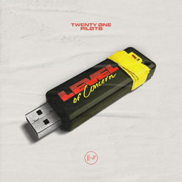

Level of concern
| 
"Level of Concern" es una canción dance-pop , pop rock y dance-rock producida por el cantante Tyler Joseph junto a Paul Meany de la banda de rock alternativo Mutemath , y su letra gira en torno a la pandemia de COVID-19 durante la cual fue escrita y grabada. . La canción fomenta la esperanza en tiempos difíciles y al mismo tiempo aborda el miedo y el pánico generalizados asociados con la pandemia. Una parte de las ganancias de la canción se donó a Crew Nation, un fondo de ayuda global de Live Nation para el personal de giras y locales afectado por la pandemia. Artista: Twenty One Pilots Álbum: Level of Concern Fecha de lanzamiento: 2020 Género: Alternativa/independiente |